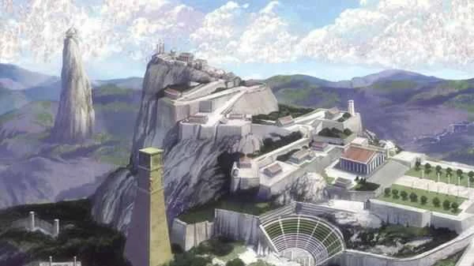

Los Caballeros del Zodiaco es una serie de manga escrita e ilustrada por Masami Kurumada. Se centra en un grupo de jóvenes guerreros conocidos como "santos" cuyo principal protagonista es Seiya, portador de la armadura de Pegaso, quienes pelean al lado de la diosa Athena, reencarnada en Saori Kido para proteger a la humanidad de un gran mal para la raza humana. En cada batalla, los santos canalizan la energía de su interior vinculada a su constelación, conocida como "cosmos", para realizar técnicas de combate especiales de cada santo. Fue publicada por primera vez el 3 de diciembre de 1983 en la revista Shūkan Shōnen Jump de la editorial Shūeisha hasta su finalización el 12 de diciembre de 1990 en la revista V Jump.
Esta serie de manga se divide en 4 sagas: en la Saga del Santuario los 5 personajes principales, Shun de Andromeda, Shiryu de Dragon, Hyoga de Cisne, Ikki de Fenix y Seiya de Pegaso, son enviados a distintos lugares de la Tierra por Saori Kido para pelear por sus armaduras de bronce y poder participar en El Torneo Galáctico, donde el ganador obtendrá la armadura dorada de Sagitario. El torneo se deja de lado cuando los 5 caballeros de bronce se enteran que el Santuario esta enviando diferentes enemigos para llevarse la armadura dorada, teniendo que detenerlos en varias batallas donde sobrepasan sus límites. Al final, deciden ir al Santuario junto a Saori Kido para acabar con el Patriarca y resguardar la armadura dorada.
La Saga del Santuario termina con el Patriarca siendo derrotado y los 5 caballeros de bronce habiendo descubierto el septimo sentido, otorgandoles un control total de sus cosmos. En Las sagas de Asgard y Poseidón los santos se encuentran frente a la amenaza de Poseidón, quien en su afán de controlar a la raza humana por completo, manipula a personas poderosas mediante engaños para que envien guerreros poderosos contra el Santuario, su principal enemigo y quien no le permite cumplir su deseo de control total. En las batallas que se dan en estas sagas veremos en acción tanto a los caballeros de bronce como a los dorados ante los caballeros que portan las armaduras de los Dioses Guerreros de Asgard y de los generales marinos.
En la Saga de Asgard Seiya de Pegaso rescata a Hilda de la manipulación mental y en la Saga de Poseidón encierran a Poseidón para recibir la noticia de la liberación del Dios del Inframundo Hades, quien busca la aniquilación completa de la raza humana. En la Saga de Hades los santos deberán pelear contra los espectros y Jueces del Inframundo para alcanzar a Hades y detener su avance en la Tierra. A lo largo de la saga los diferentes santos pelean contra antiguos compañeros y rivales de batalla convertidos en espectros tras jurar lealtad a Hades, siendo los más conocidos Saga de Geminis y Shion de Aries. Tras el sacrificio de los caballeros dorados para entrar a los campos elíseos, Athena y los caballeros de bronce se enfrentan a Hades, resultando en la derrota del Dios del Inframundo.
Caballero de Pegaso
Diosa Athena
Tras el gran exito de la serie de mangas y sus adaptaciones a la televisión y cine, la editorial Shueisha utilizaría el nombre de "Los Caballeros del Zodiaco" para crear nuevas series basadas en las aventuras de los diferentes santos a lo largo de los años. Aunque la mayoría de ellas se las considera "no canon" (es decir, no forman parte de la historia original), hay una de ellas en las que los lectores no se ponen de acuerdo, conocida como "Los Caballeros del Zodiaco: El Lienzo Perdido" de Shiori Teshirogi, colocada cronologicamente 200 años antes de los sucesos de la serie original. La razón detrás de ello es debido a que la serie logra explicar muchas cosas que no se dejan en claro en la historia original.